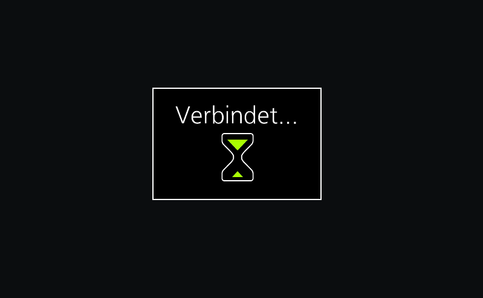

Bevor wir loslegen
- Prüfen Sie, ob Ihre Kamera von Cascable unterstützt wird.
- Prüfen Sie, ob die Firmware-Version Ihrer Kamera aktuell ist.
- Prüfen Sie, ob Sie die neueste Version von Cascable haben.
Cascable mit Ihrer WLAN-Kamera verbinden
- Drücken Sie die Menu-Taste auf Ihrer Kamera und wechseln Sie zu Wi-Fi im
 .
.
- Wählen Sie die Option Wi-Fi-Funktion.

- Drücken Sie auf Neue Verbindung, wenn Sie diese Funktion zum ersten Mal nutzen. Für künftige Verbindungen lesen Sie bitte unten den Hinweis.
- Wählen Sie Aufnahme & Ansicht über Fernbedienung im nächsten Bildschirm.
- Öffnen Sie auf Ihrem iOS-Gerät Einstellungen > WLAN, wählen Sie Ihr WLAN-Netzwerk aus und geben Sie das Passwort ein, das auf dem Bildschirm Ihrer Kamera angezeigt wird.
- Starten Sie Cascable auf Ihrem iOS-Gerät. Die App wird Ihre Kamera automatisch erkennen und eine Verbindung herstellen. Je nach Kamera kann es sein, dass Sie das Pairing auf dem Bildschirm bestätigen müssen.
Hinweis
Wenn Sie das WLAN mit einem iOS-Gerät bereits früher schon verwendet haben, wählen Sie Ziel aus Verlauf wählen aus dem Menü Wi-Fi Funktion.
Wählen Sie einfach die Option Direkt. Während die Kamera Verbinden … anzeigt, fahren Sie oben mit Schritt 5 fort. Sie sollten das Kennwort nicht erneut eingeben müssen.

Immer noch Probleme?
Wenn es immer noch nicht funktioniert, gehen Sie bitte auf die Cascable Webseite, damit wir Ihnen weiterhelfen können.